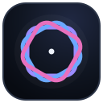
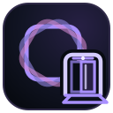
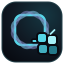
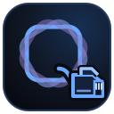
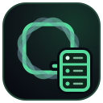
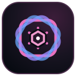

Shared visual language
The Cyrune lattice
One connected system, expressed through seven distinct instruments.





Shared visual language
One connected system, expressed through seven distinct instruments.





